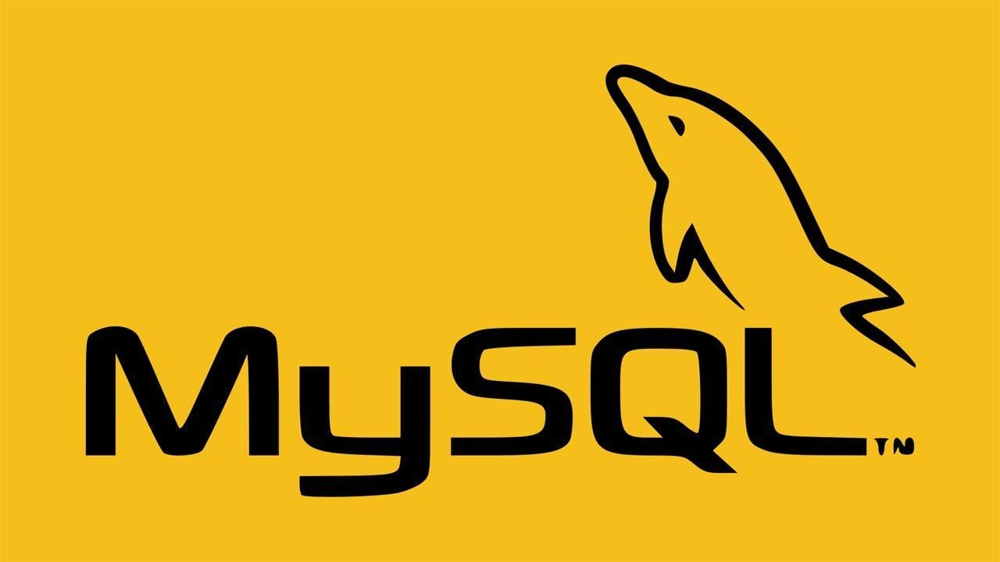

MySQL
Pelajari MySQL untuk mengelola dan menyimpan data secara efisien di dalam aplikasi web. Di course ini, kamu akan memahami cara membuat database, tabel, dan menjalankan query untuk mengolah data dengan cepat dan aman.
Daftar Materi
-
01Pengenalan Dasar20 min
-
02Instalasi & Persiapan Lingkungan20 min
-
03Dasar-dasar SQL36 min
-
04Pengelolaan Tabel & Relasi40 min
-
05Fungsi dan Agregasi12 min
-
06Constraint & Indexing40 min
-
07View, Alias, dan Stored Routine8 min
-
08User Management & Privilege25 min
-
09Backup, Restore & Maintenance18 min
-
10MySQL untuk Pengembangan Web45 min
-
11Project Akhir: Aplikasi CRUD PHP + MySQL45 min
Detail Materi
Durasi
2.5 Jam
Total Materi
12 Modul
Tipe
Back-End
Tentang Materi
Course MySQL ini dirancang untuk membantumu menguasai dasar manajemen database relasional. Kamu akan belajar konsep tabel, relasi antar data, join, hingga optimasi query untuk performa yang lebih baik.
Cocok untuk developer, data analyst, atau siapa pun yang ingin memahami cara kerja database dan mengintegrasikannya dengan aplikasi web secara profesional.
Apa yang akan kamu pelajari?
- Memahami konsep dasar MySQL dan peranannya sebagai sistem manajemen database relasional (RDBMS)
- Menyiapkan lingkungan pengembangan dan mengenal berbagai tool seperti MySQL CLI, phpMyAdmin, dan Workbench
- Menguasai dasar-dasar SQL untuk membuat, mengelola, dan memanipulasi data dalam tabel
- Mempelajari relasi antar tabel serta cara menggabungkan data menggunakan JOIN dan subquery
- Menggunakan fungsi dan agregasi untuk analisis data seperti COUNT, SUM, dan AVG
- Memahami constraint, indexing, serta teknik dasar optimasi performa database
- Membuat view, alias, dan prosedur tersimpan untuk efisiensi pengelolaan data
- Mengatur user, hak akses, serta melakukan backup, restore, dan maintenance database
- Menerapkan MySQL dalam proyek web nyata menggunakan PHP dan framework populer